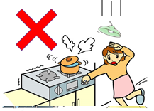
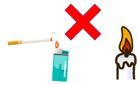
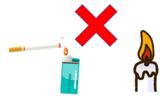

緊急地震速報が鳴り出したら
火を止める、避難経路上の扉を開放する、玄関など比較的安全な場所へ退避する、隠れる場所を探すなど、安全確保に向けた行動をしてください。
家屋に倒壊などの恐れがある場合は、屋外への避難も視野に入れてください。
ただし、安全第一です。無理に動いたために、揺れ出したあと危険な状態になっては無意味です。

身の安全を確保する

 机の下にかくれる、クッションやカバン等で頭部守る、柱につかまるなど、当面の安全を確保してください。
外に避難した場合は、窓ガラス、塀、自動販売機等から、できるだけ距離を取ってください。
車道に飛び出したり、階段などの段差付近にいるなども大変危険ですので、避けてください。
机の下にかくれる、クッションやカバン等で頭部守る、柱につかまるなど、当面の安全を確保してください。
外に避難した場合は、窓ガラス、塀、自動販売機等から、できるだけ距離を取ってください。
車道に飛び出したり、階段などの段差付近にいるなども大変危険ですので、避けてください。
揺れが収まったら
 火を止め、ガスの元栓を閉じ、電気製品も可能な限り止めてください。
また、ブレーカーを切って、通電火災に遭わないように備えてください。
扉の開放が出来なかった場合は、椅子でも何でも手近なものを挟んで避難経路上の扉を開放してください。
なお、安全が確認できるまで、火気厳禁です。停電しているからとローソクに火をつけた途端、ガス漏れに引火するかもしれません。

火を止め、ガスの元栓を閉じ、電気製品も可能な限り止めてください。
また、ブレーカーを切って、通電火災に遭わないように備えてください。
扉の開放が出来なかった場合は、椅子でも何でも手近なものを挟んで避難経路上の扉を開放してください。
なお、安全が確認できるまで、火気厳禁です。停電しているからとローソクに火をつけた途端、ガス漏れに引火するかもしれません。
